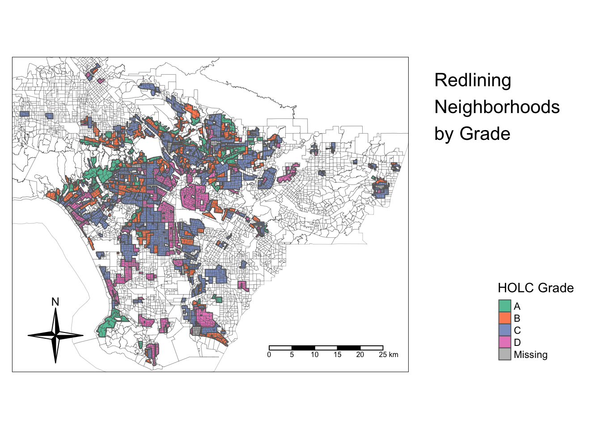
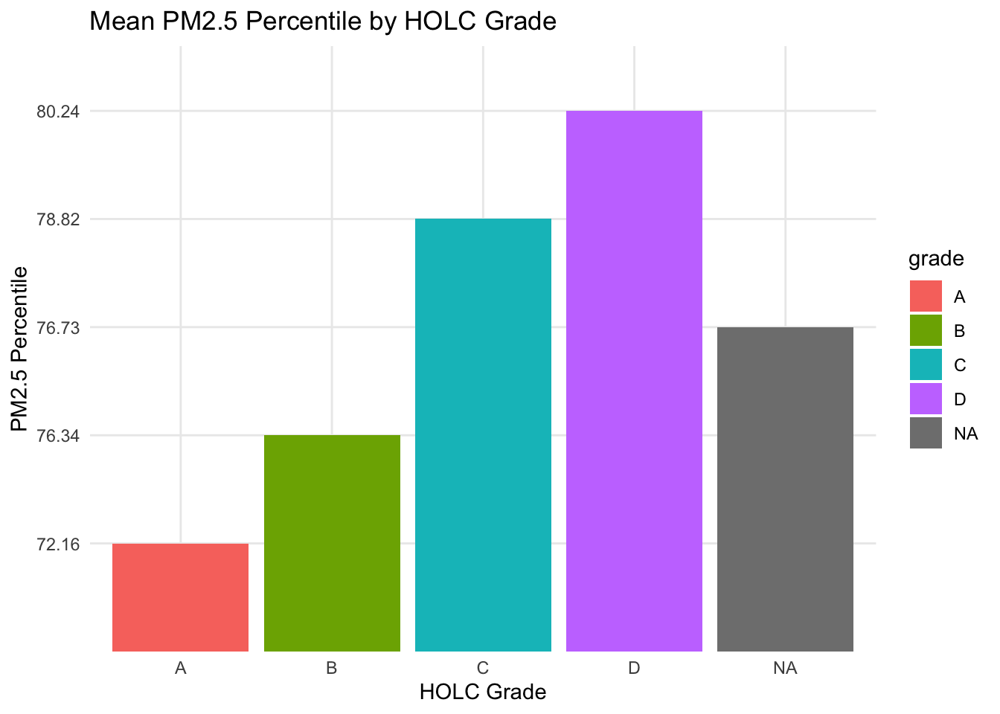
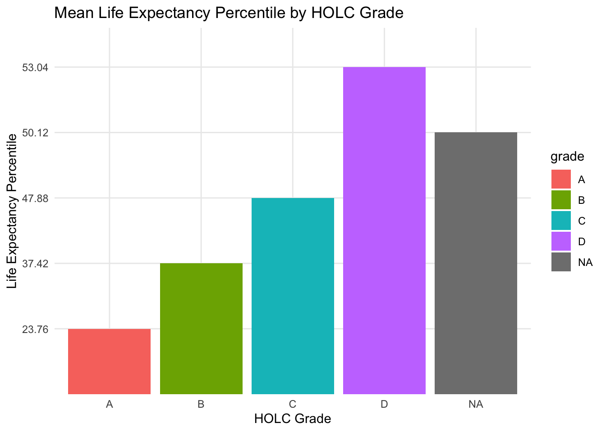
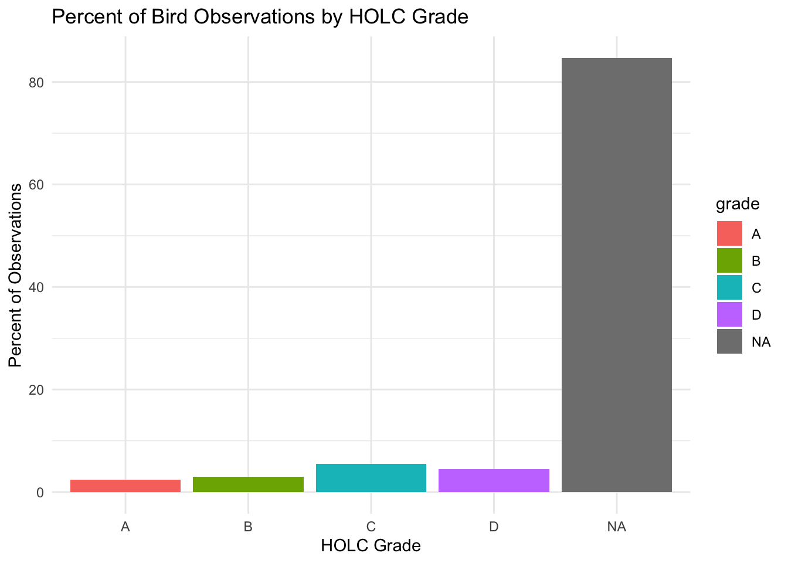

# Suppressing ouputs from all the loaded packages
suppressMessages(library(sf))
suppressMessages(library(tmap))
suppressMessages(library(dplyr))
suppressMessages(library(here))
suppressMessages(library(knitr))
suppressMessages(library(tidyr))
suppressMessages(library(kableExtra))
suppressMessages(library(ggplot2))Exploring patterns of environmental justice
Load Packages
Data Setup/Transformation
# Read in data.
ejscreen <- st_read(here::here("data", "ejscreen/EJSCREEN_2023_BG_StatePct_with_AS_CNMI_GU_VI.gdb"), quiet = TRUE)
# Perform CRS Transform and filter data for Los Angeles data.
ejscreen <- ejscreen %>%
st_transform(crs = 4326) %>%
filter(STATE_NAME == "California") %>%
filter(CNTY_NAME == "Los Angeles County")
# Read in HOLC data.
holc_data <- st_read(here::here("data", "mapping-inequality", "mapping-inequality-los-angeles.json"), quiet = TRUE)
# Transform HOLC data to crs 4326.
holc_data <- st_transform(holc_data, crs = 4326)
# Read in birds data.
birds_data <- st_read(here::here("data", "gbif-birds-LA", "gbif-birds-LA.shp"), quiet = TRUE)
# Perform CRS Transform and filter data for 2022 within Los Angeles.
birds_data <- birds_data %>%
st_transform(crs = 4326) %>%
filter(year == "2022") Data Validation and CRS Consistency Check
# Holds the names of NULL datasets `if any`
null_datasets <- c()
# Check if any of our datasets are null and tag which ones in null_datasets
if (is.null(ejscreen)) {
null_datasets <- c(null_datasets, "ejscreen")
}
if (is.null(holc_data)) {
null_datasets <- c(null_datasets, "holc_data")
}
if (is.null(birds_data)) {
null_datasets <- c(null_datasets, "birds_data")
}
# Which datasets `if any` are null
if (length(null_datasets) > 0) {
print(paste("The following datasets are NULL:", paste(null_datasets, collapse = ", ")))
} else {
# All datasets are non-NULL so we proceed to check for identical CRS
if (st_crs(ejscreen) == st_crs(holc_data) && st_crs(ejscreen) == st_crs(birds_data)) {
print("All datasets have been identically transformed.")
} else {
# Check pairs individually if they don't all match
if (st_crs(ejscreen) == st_crs(holc_data)) {
print("ejscreen and holc_data have identical CRS.")
}
if (st_crs(ejscreen) == st_crs(birds_data)) {
print("ejscreen and birds_data have identical CRS.")
}
if (st_crs(holc_data) == st_crs(birds_data)) {
print("holc_data and birds_data have identical CRS.")
}
}
}[1] "All datasets have been identically transformed."# Keeping my Data window clear of temporary variables
rm(null_datasets)Part 1: Legacy of redlining in current environmental (in)justice
Plot HOLC data by historical redlining neighborhoods over Los Angeles
# Fix issues with geometries
holc_data <- st_make_valid(holc_data)
tmap_mode("plot") # in case its not for rendering
# Create a map showing Los Angeles (LA) colored by HOLC grades
tm_shape(holc_data) + # Base is HOLC data
tm_polygons("grade", palette = "Set2", title = "HOLC Grade") + # Pro
tm_shape(ejscreen) +
tm_borders(lwd = 0.2) + # add LA neighborhood borders
tm_layout(
title = "Redlining\nNeighborhoods\nby Grade",
title.position = c("center", "top"),
legend.outside = TRUE,
legend.position = c("right", "bottom")
) +
tm_scale_bar(position = c("right", "bottom")) +
tm_compass(position = c("left", "bottom"), type = "4star")
Calculated percentages of HOLC grading groupings
summarized_holc_data <- holc_data %>%
group_by(grade) %>%
mutate(grade = ifelse(is.na(grade), "None", grade)) %>%
summarize(count = n(),
percent = (count / nrow(holc_data)) * 100,
.groups = 'drop') %>%
mutate(percent = sprintf("%.2f%%", percent)) %>%
select(grade, count, percent) %>%
st_drop_geometry()
# Create a table to output data summary
summarized_holc_data %>%
rename(
"HOLC Grade" = grade,
"Count" = count,
"Percentage" = percent
) %>%
kable(format = "html", caption = "HOLC Grade count and percentages") %>%
kable_styling("striped", full_width = F)| HOLC Grade | Count | Percentage |
|---|---|---|
| A | 57 | 13.67% |
| B | 121 | 29.02% |
| C | 167 | 40.05% |
| D | 71 | 17.03% |
| None | 1 | 0.24% |
Join HOLC and EJScreen data
# Ensure the join is correct and calculate mean values for specified variables
joined_data <- st_join(holc_data, ejscreen, join = st_intersects)
summary_stats <- joined_data %>%
group_by(grade) %>%
summarize(
mean_low_income = mean(LOWINCPCT, na.rm = TRUE), # Use LOWINCPCT for % low income
mean_pm25_percentile = mean(P_PM25, na.rm = TRUE), # Use P_PM25 for PM2.5 percentile
mean_life_expectancy_percentile = mean(P_LIFEEXPPCT, na.rm = TRUE), # Use P_LIFEEXPPCT for life expectancy percentile
.groups = 'drop'
) %>%
mutate(across(where(is.numeric), ~ sprintf("%.2f", .))) %>% # Format numbers to 2 decimals
st_drop_geometry()
# Display table of summary statistics
summary_stats %>%
rename(
"HOLC Grade" = grade,
"Mean % Low Income" = mean_low_income,
"Mean PM2.5 Percentile" = mean_pm25_percentile,
"Mean Life Expectancy Percentile" = mean_life_expectancy_percentile
) %>%
kable(format = "html", caption = "Mean Environmental Justice Metrics by HOLC Grade") %>%
kable_styling("striped", full_width = F)| HOLC Grade | Mean % Low Income | Mean PM2.5 Percentile | Mean Life Expectancy Percentile |
|---|---|---|---|
| A | 0.15 | 72.16 | 23.76 |
| B | 0.24 | 76.34 | 37.42 |
| C | 0.34 | 78.82 | 47.88 |
| D | 0.39 | 80.24 | 53.04 |
| NA | 0.36 | 76.73 | 50.12 |
Plot Mean % Low Income by HOLC Grade
mean_income_plot <- ggplot(summary_stats, aes(x = grade, y = mean_low_income, fill = grade)) +
geom_bar(stat = "identity") +
labs(
title = "Mean % Low Income by HOLC Grade",
x = "HOLC Grade",
y = "% Low Income"
) +
theme_minimal()Plot Mean PM2.5 Percentile by HOLC Grade
ggplot(summary_stats, aes(x = grade, y = mean_pm25_percentile, fill = grade)) +
geom_bar(stat = "identity") +
labs(
title = "Mean PM2.5 Percentile by HOLC Grade",
x = "HOLC Grade",
y = "PM2.5 Percentile"
) +
theme_minimal()
Plot Mean Life Expectancy Percentile by HOLC Grade
ggplot(summary_stats, aes(x = grade, y = mean_life_expectancy_percentile, fill = grade)) +
geom_bar(stat = "identity") +
labs(
title = "Mean Life Expectancy Percentile by HOLC Grade",
x = "HOLC Grade",
y = "Life Expectancy Percentile"
) +
theme_minimal()
Based on our findings from part 1 the plot shows that neighborhoods rated “D” or “C” are often associated with historically disadvantaged areas. They have the highest mean PM2.5 exposure and lowest life expectancy percentiles. This highlights persistent environmental inequities. Our summary tables further supports that Grade C is the most common though the map alone might be misleading without considering neighborhood sizes. Areas with higher HOLC grades like “A” have lower PM2.5 levels and higher life expectancy. Based on this we can speculate a lasting legacy of redlining where lower graded neighborhoods are still exposed to higher pollution and poorer health. Our findings emphasize the need for targeted policy interventions in historically marginalized areas to address environmental injustices in these communities.
Part 2: Legacy of redlining in biodiversity observations
# Join bird data with HOLC grades
birds_data <- st_make_valid(birds_data) # Ensure no geometry issues
bird_observations <- st_join(birds_data, holc_data, join = st_intersects)Calculate the percentage of observations by HOLC grade
bird_summary <- bird_observations %>%
group_by(grade) %>%
summarize(
observation_count = n(),
.groups = 'drop'
) %>%
mutate(percent_observations = (observation_count / nrow(bird_observations)) * 100) %>%
mutate(percent_observations = sprintf("%.2f%%", percent_observations)) %>%
select(grade, observation_count, percent_observations) %>%
st_drop_geometry()
# Display table of bird observation percentages by HOLC grade
bird_summary %>%
rename(
"HOLC Grade" = grade,
"Observation Count" = observation_count,
"Percent of Observations" = percent_observations
) %>%
kable(format = "html", caption = "Percent of Bird Observations by HOLC Grade") %>%
kable_styling("striped", full_width = F)| HOLC Grade | Observation Count | Percent of Observations |
|---|---|---|
| A | 1073 | 2.40% |
| B | 1329 | 2.98% |
| C | 2439 | 5.46% |
| D | 2004 | 4.49% |
| NA | 37796 | 84.67% |
Plotting bird observation percentaged by HOLC grade
# Plot percent of bird observations by HOLC grade
ggplot(bird_summary, aes(x = grade, y = as.numeric(sub("%", "", percent_observations)), fill = grade)) +
geom_bar(stat = "identity") +
labs(
title = "Percent of Bird Observations by HOLC Grade",
x = "HOLC Grade",
y = "Percent of Observations"
) +
theme_minimal()
Based on our findings in Part 2, the distribution of bird observations across HOLC grades reveals a noticeable disparity. Neighborhoods originally graded as “C” and “D” have a slightly higher concentration of bird observations compared to “A” and “B.” However a large percentage of observations lack an assigned HOLC grade probably due to areas outside the redlined boundaries or incomplete data. These results show some alignment with Ellis-Soto et al. 2023 who highlighted that redlined neighborhoods remain undersampled. This uneven sampling suggests that while some biodiversity data exists in historically marginalized areas. These neighborhoods still experience gaps in citizen science participation. Theres a need for targeted efforts to support biodiversity monitoring in historically underserved areas.
References
Data
Richmond University Digital Scholarship Lab. (n.d.). Redlining Data. Retrieved from https://dsl.richmond.edu/panorama/redlining/data
U.S. Environmental Protection Agency. (n.d.). Download EJSCREEN Data. Retrieved from https://www.epa.gov/ejscreen/download-ejscreen-data
Libraries
Zhu, H. (2023). kableExtra: Construct Complex Tables for R Markdown. R package version 1.3.4. Retrieved from https://cran.r-project.org/package=kableExtra
Wickham, H., & François, R. (2023). dplyr: A Grammar of Data Manipulation. R package version 1.1.0. Retrieved from https://CRAN.R-project.org/package=dplyr
Wickham, H. (2023). tidyr: Tidy Messy Data. R package version 1.3.0. Retrieved from https://CRAN.R-project.org/package=tidyr
Wickham, H. (2023). ggplot2: Elegant Graphics for Data Analysis. R package version 3.4.0. Retrieved from https://ggplot2.tidyverse.org
Müller, K. (2023). here: A Package for Easy File Path Handling. R package version 1.0.1. Retrieved from https://CRAN.R-project.org/package=here
Pebesma, E. J., & Bivand, R. S. (2023). sf: Simple Features for R. R package version 1.0-8. Retrieved from https://CRAN.R-project.org/package=sf
Tennekes, M. (2023). tmap: Thematic Maps. R package version 3.3. Retrieved from https://cran.r-project.org/package=tmap